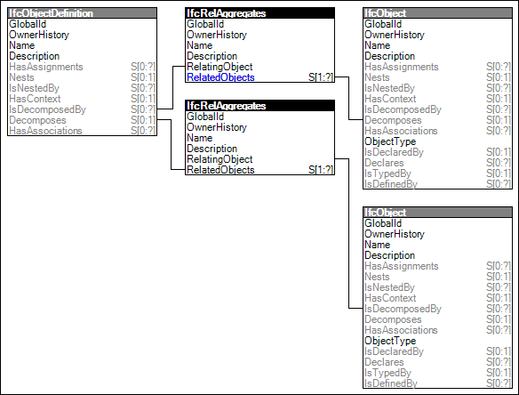

Link to this page
Link to this pageAn aggregation indicates an internal unordered part composition relationship between the whole structure, referred to as the "composite", and the subordinate components, referred to as the "parts". The concept of aggregation is used in various ways. Examples are:
Aggregation is a bi-directional relationship, the relationship from the composite to its parts is called Decomposition, and the relationship from the part to its composite is called Composition.
Figure 29 illustrates an instance diagram.
 |
Figure 29 — Aggregation |